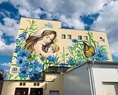
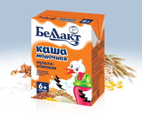
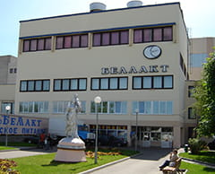
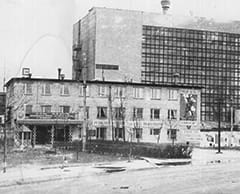
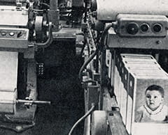
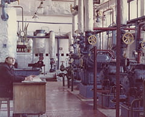

5 октября 1970 года
Ввод в эксплуатацию Волковысского молочно-консервного комбината детстких продуктов
Узнать больше
Вернутся к фактам
октябрь 1970 года
Выпуск первой продукции
Узнать больше
Вернутся к фактам
июнь 1995 года
Предприятие преобразовано в Волковысское ОАО "Беллакт"
Узнать больше
Вернутся к фактам
2002 — 2008 года
Волковысское ОАО "Беллакт" провело крупнейшую модернизацию производства
Узнать больше
Вернутся к фактам
2006 - 2010 года
Запуск линейки жидких продуктов питания для детей раннего возраста
Узнать больше
Вернутся к фактам
2020 год
Создание мурала матери и младенца в окружении ярких цветущих васильков на здании предприятия к 50-летнему юбилею компании
Узнать больше
Вернутся к фактам